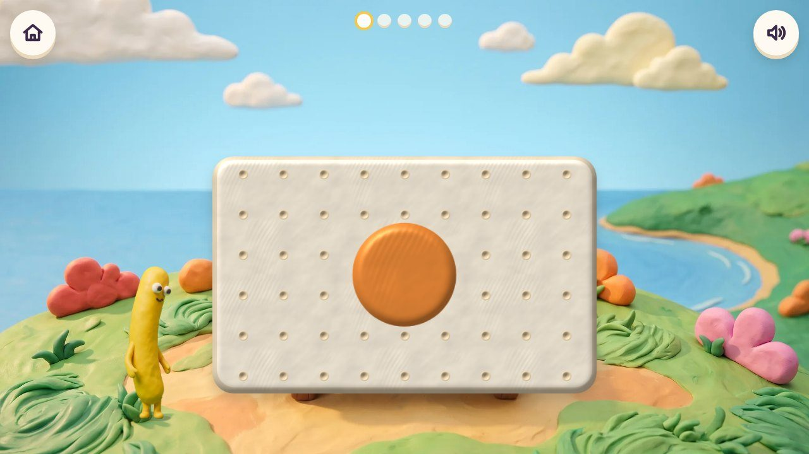
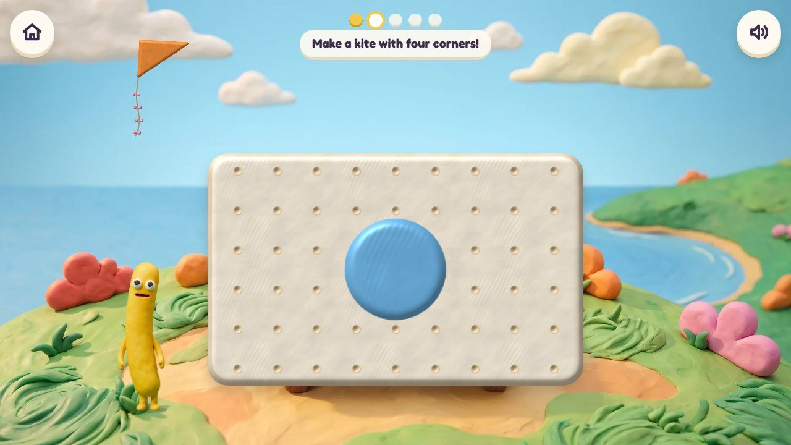
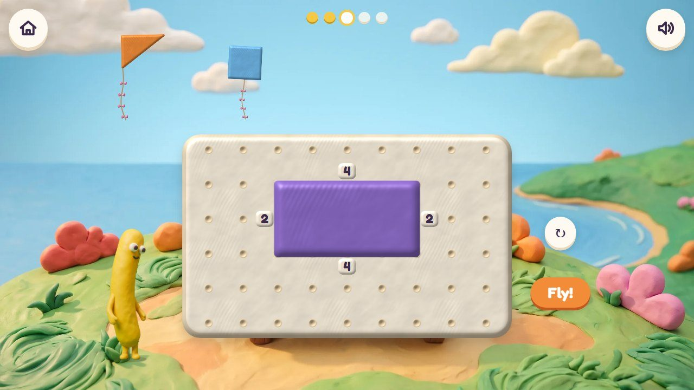
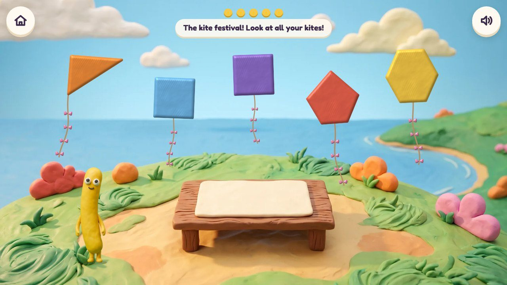
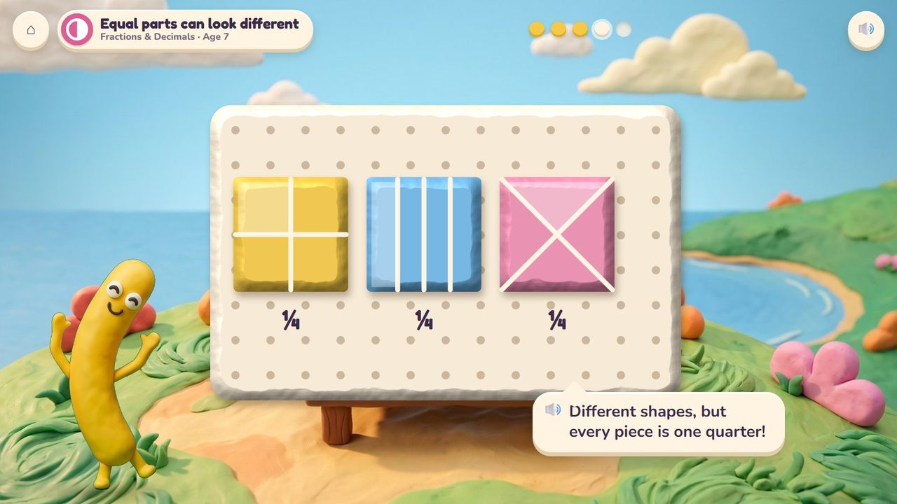
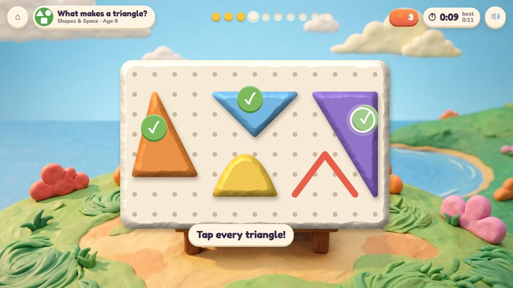
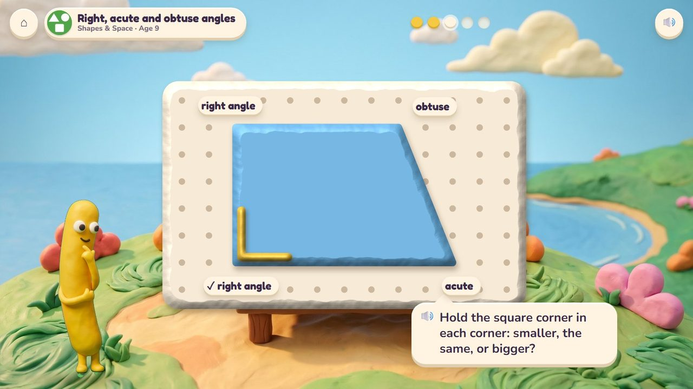
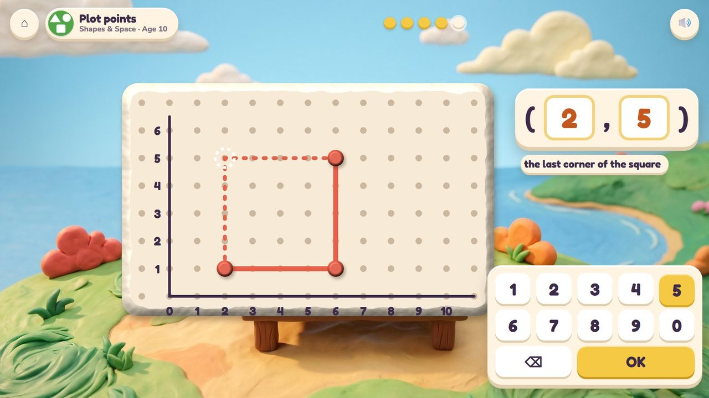

Pull corners out of a clay lump on the peg mat to make shapes.
57 lessons (48 taught here first, the rest practised here) in 4 topics:
Fractions & DecimalsMeasuringShapes & SpacePatterns & Graphs

A lump of clay sits on Noodle's peg mat; pulling its edge out to the pegs makes corners: three corners make a triangle, four a square or a kite. Finished shapes fly as kites. The same mat later cuts shapes into equal parts, checks corners with a square corner, and gets numbers on its edges to become the coordinate grid.
Pull a corner out, push it back, fold or cut along a line, turn the shape.
The kite festival: every shape made today flies over the hill.
These frames are the real app today; the frames further down show the same game in other lessons and ages.
Noodle's peg mat with a round lump in the middle.

Pull out four corners: a kite with four corners.
🔊 “Make a kite with four corners!”

A rectangle with its sides counted in pegs.

Every shape made today flies.
🔊 “The kite festival! Look at all your kites!”
Tap every shape that fits (every triangle, every right angle), or type how many sides and corners. Ten questions at 6-7, a 60-second round from 8; your time and your best on screen; only right answers count; a miss shows the answer and comes back later. No clock under 6.
The badge at the top left says the topic, the lesson and the age.

Three squares cut into quarters three ways: every piece is one quarter.

The quick round: tap every triangle (not the curved one, not the open one). Timed.

The square corner checks each corner: smaller, the same or bigger.

Numbers on the mat's edges: the last corner of the square is at (2, 5).
| Age 3Pre-school | Circles, squares and triangles; find the same shape; sort by shape. |
| Age 4Pre-K | Rectangles and ovals; sides and corners; make a picture from shapes. |
| Age 5Kindergarten | Shapes of any size or turn; flat or solid; build and put shapes together. |
| Age 6Grade 1 | What makes a triangle; halves and quarters of a shape. |
| Age 7Grade 2 | Triangles to hexagons; equal parts can look different; split a rectangle into squares. |
| Age 8Grade 3 | Rhombus, rectangle and square; fair parts of a shape; perimeter. |
| Age 9Grade 4 | Right, acute and obtuse angles; measuring and adding angles; parallel and perpendicular; symmetry. |
| Age 10Grade 5 | The coordinate grid; plotting points; shape families. |
circles to hexagons, then families, angles and lines
plain pegs, then a grid with side numbers, then axes with numbers
Noodle counts corners aloud; the square corner checker
pulling corners; tapping; the number pad for counts and points
Age by age they are on the full list; here grouped by topic (the first activity named teaches a lesson, the others practise it).
1.G.3Pull-a-Shape · Smoothie Stand1.G.3Pull-a-Shape · Smoothie Stand1.G.3Pull-a-Shape · Smoothie Stand2.G.3Pull-a-Shape · Smoothie Stand2.G.3Pull-a-Shape2.G.3Smoothie Stand · Pull-a-Shape3.NF.1Smoothie Stand · Pull-a-Shape3.NF.1Smoothie Stand · Pull-a-Shape3.G.2Pull-a-Shape · Garden Beds4.NF.1Smoothie Stand · Pull-a-Shape3.MD.8Garden Beds · Pull-a-Shapeearly yearsPull-a-Shapeearly yearsPull-a-Shapeearly yearsPull-a-Shapeearly yearsPull-a-Shape · Critter Makerearly yearsPull-a-Shapeearly yearsPull-a-Shapeearly yearsPull-a-Shape · Critter Makerearly yearsPull-a-Shapeearly yearsPull-a-ShapeK.G.2Pull-a-ShapeK.G.2Pull-a-ShapeK.G.3Pull-a-ShapeK.G.2Pull-a-Shape · Treasure ShopK.G.4Pull-a-ShapeK.G.5Pull-a-ShapeK.G.6Pull-a-Shape1.G.1Pull-a-Shape1.G.1Pull-a-Shape1.G.2Pull-a-Shape1.G.2Pull-a-Shape1.G.2Pull-a-Shape2.G.1Pull-a-Shape2.G.1Pull-a-Shape2.G.1Pull-a-Shape · Garden Beds2.G.2Garden Beds · Pull-a-Shape3.G.1Pull-a-Shape3.G.1Pull-a-Shape4.G.1Pull-a-Shape4.G.1Pull-a-Shape · Clock Tower4.MD.5Clock Tower · Pull-a-Shape4.MD.6Pull-a-Shape4.MD.6Pull-a-Shape4.MD.7Pull-a-Shape · Clock Tower4.G.1Pull-a-Shape4.G.2Pull-a-Shape4.G.2Pull-a-Shape4.G.3Pull-a-Shape5.G.1Pull-a-Shape5.G.2Pull-a-Shape · Garden Beds5.G.3Pull-a-Shape5.G.4Pull-a-Shapeearly yearsPull-a-Shape · Critter Makerearly yearsCritter Maker · Pull-a-Shape4.OA.5Critter Maker · Pull-a-Shape5.OA.3Pull-a-Shape · Garden Beds5.G.2Pull-a-Shape · Treasure Shop